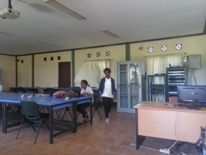

Laboratorium Komputasi Awan dan Cisco Academy di Gedung 514
Laboratorium Komputasi Awan dan Cisco Academy tersedia Cisco Router dan Server for Private Cloud(SaaS, PaaS, IaaS). Laboratorium ini digunakan untuk identify the Computer architecture, Storage architecture, Network architecture, Identity architecture, Image Service architecture, Control plane architecture and Cloud management architecture. Mahasiswa yang dapat memasuki laboratorium ini yang mengambil mata kuliah Virtualisasi Komputer, Manajemen Media Penyimpanan Enterprise, dan Penerapan Infrastruktur Cloud.